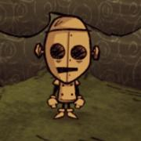
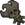
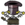
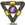
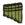
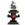
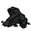

 I WIN. GOOD.
This page lists all of WX-78's Quotes which are spoken when the player examines an in-game item or object. The player can alt-click items and objects to examine them.
Axe- "A TOOL FOR CHOPPING DOWN LIVING MATTER"
Luxury Axe- "GOLD IS MORE DURABLE?"
Shovel- "IT HAS MANY USES"
Regal Shovel- "GOLD IS MORE DURABLE?"
Pickaxe- "MINING IMPLEMENT DETECTED"
Opulent Pickaxe- "GOLD IS MORE DURABLE?"
Razor- "EXFOLIATE"
Razor (can't shave)- "THAT IS NOT A VALID SHAVE TARGET"
Razor (nothing left)- "THERE IS NO STUBBLE TO SHAVE"
Razor (shaving a waken beefalo)- "DANGER! TARGET IS AWAKE"
Hammer- "DECONSTRUCTION"
Pitchfork- "I ENJOY ITS POINTY PARTS"
Campfire (upon being built)- "A TEMPORARY ENCAMPMENT"
Campfire (high)- "WARNING: FIRE IS RAMBUNCTIOUS"
Campfire (normal)- "IT REMINDS ME OF SOMETHING"
Campfire (low)- "WARNING: FIRE LEVEL LOW"
Campfire (embers)- "WARNING: FIRE LEVEL CRITICAL"
Campfire (burned out)- "NO FIRE DETECTED"
Fire Pit (upon being built)- "WARMTH AND LIGHT"
Fire Pit (high)- "WARNING: FIRE LEVEL EXCEEDS DESIGN PARAMETERS"
Fire Pit (normal)- "THIS FIRE IS FULLY OPERATIONAL"
Fire Pit (low)- "WARNING: FIRE LEVEL LOW"
Fire Pit (embers)- "WARNING: FIRE LEVEL CRITICAL"
Fire Pit (burned out)- "IT NEEDS TO BE REBOOTED"
Torch- "PRIMITIVE LIGHT SOURCE"
Torch (run out)- "TORCH EXHAUSTED"
Miner Hat- "SUPPORTS HANDS-FREE OPERATION"
Miner Hat (run out)- "TORCH EXHAUSTED"
Pumpkin Lantern- "IT HAS AN EERIE LIGHT"
Lantern- "LIGHT THE WAY, FRIEND"
Backpack- "UPGRADED STORAGE MODULE"
Piggyback- "UPGRADED STORAGE MODULE V2.0
Bird Trap- "STUPID BIRDS. HA."
Bug Net- "HARVEST INSECTS"
Fishing Rod- "I DO NOT LIKE WATER"
Straw Roll- "SLEEP( 1000 )"
Fur Roll- "COMFORT IS AN ILLUSION"
Tent- "I CAN REBOOT IN THERE"
Trap- "I AM ADEPT AT WEAVING"
Honey Poultice- "TEMPORARY MAINTENANCE DEVICE."
Healing Salve- "KILL MICROLIFE TO SAVE MACROLIFE"
Heat Stone- "IT WARMS MY COLD CHASSIS"
Heat Stone (cold)- "A DECEPTIVELY SIMPLE DEVICE"
Heat Stone (warm)- "IT WARMS MY COLD CHASSIS"
Heat Stone (hot)- "TEMPERATURE AT MAXIMUM"
Umbrella- "THIS WILL KEEP ME RUST-FREE"
Compass- "A DEVICE THAT SHOWS WHERE I AM GOING"
Crock Pot- "I CAN REFINE MEATS AND VEGETABLES INTO MORE ROBUST FORMS"
Crock Pot (cooking, long time left)- "MORE TIME IS REQUIRED"
Crock Pot (cooking, short time left)- "IT IS ALMOST COMPLETE"
Crock Pot (finished)- "THE COOKING PROCESS IS DONE"
Basic Farm and Improved Farm- "IT IS CURRENTLY NOT ACTIVE"
Basic Farm and Improved Farm (growing)- "LIFE IS INNEFICIENT"
Basic Farm and Improved Farm (needs fertilizer)- "ITS RESOURCES ARE EXHAUSTED"
Ice Box- "CARRY ON, MY FRIGID BROTHER"
Drying Rack- "I SHOULD HANG EXPIRED MEATSACKS HERE"
Drying Rack (drying)- "MEATSACKS TAKE TIME TO DRY"
Drying Rack (finished)- "I HAVE NEW PROTEINS"
Science Machine- "MOTHER?"
Alchemy Engine- "HELLO, FRIEND"
Winterometer- "HELLO, FRIEND"
Rainometer- "WELCOME, BROTHER."
Lightning Rod- "SURGE PROTECTION"
Lightning Rod (charged)- "BACKUP POWER"
Gunpowder- "PUTS THE POW IN POWDER"
Spear- "BRING IT, FLESHLINGS"
Ham Bat- "TASTE IRONY AND DIE, FLESHLINGS."
Boomerang- "REUSABLE PROJECTILE."
Boomerang (hit self)- "ERROR, CATCH FAILED"
Blow Dart- "A SHARP PROJECTILE."
Sleep Dart- "THESE CREATURES ARE SO MANIPULABLE"
Fire Dart- "A WEAPON OF MINOR DESTRUCTION"
Football Helmet- "PADDING FOR MY PROCESSING UNIT"
Grass Suit- "THIS WILL ADD EXTRA PROTECTION TO MY METAL CASING."
Logsuit- "UPGRADED ARMOUR"
Marble Suit- "EXTRA HEAVY DUTY CASING."
Bee Mine- "IMPROVISED STINGING DEVICE"
Tooth Trap- "THIS WILL PUNCTURE MY ENEMIES' FEET"
Shelmet- "THIS MAKES ME HAPPY"
Snurtle Shell Armor- "HOUSING MODULE"
Bee Box- "WORK HARDER, BEES!"
Bee Box (no honey)- "WORK HARDER, BEES!"
Bee Box (some honey)- "WORK HARDER, BEES!"
Bee Box (full with honey)- "WORK HARDER, BEES!"
Birdcage- "I WILL IMPRISON THE FLESHLINGS"
Birdcage (occupied)- "NOW I HAVE YOU"
Birdcage (occupied, sleeping)- "WAKE UP, FLESHLING"
Pig House- "THE FURNITURE IS ALL PIG-SHAPED"
Pig House (occupied and lights are off)- "THE OCCUPANT MUST BE SLEEPING"
Pig House (occupied and lights are on)- "OCCUPIED"
Hay Wall (inventory)- "NOT VERY GOOD DEFENSES"
Hay Wall (placed)- "THAT SEEMS SUBOPTIMAL"
Wood Wall (inventory)- "WOODEN DEFENSES"
Wood Wall (placed)- "I AM SOMEWHAT REASSURED"
Stone Wall (inventory)- "STONE DEFENSES"
Stone Wall (placed)- "THAT MAKES ME FEEL SAFE"
Chest- "EXTERNAL STORAGE UNIT"
Chest (full)- "IT IS AT CAPACITY"
Chest (not allowed to store, like as backpack)- "THAT INPUT IS NOT ALLOWED"
Sign- "YOU ARE HERE"
Wooden Flooring- "WOOD GROUND"
Carpeted Flooring- "CARPET GROUND"
Cobblestones- "ROAD PIECE"
Checkerboard Flooring- "MARBLE GROUND"
Turfs- "THE GROUND"
Rope- "IT IS LESS USEFUL THAN IT APPEARS"
Boards- "THEY ARE FLATTER NOW"
Cut Stone- "I HAVE IMPROVED THE ROCKS"
Papyrus- "I PREFER DOT MATRIX PAPER"
Purple Gem- "IT IS STRANGE"
Nightmare Fuel- "DEBUGGING RESIDUE"
 Meat Effigy- "WHO IS THAT?"
 Prestihatitator- "WITH THIS EXTRA POWER I HAVE... MORE POWER!"
 Shadow Manipulator- "PERHAPS IT IS TOO POWERFUL."
 Pan Flute- "I CAN REBOOT FLESHLINGS WITH THIS"
 Night Light- "UNKNOWN LIGHT SOURCE"
One-man Band- "AN EXTERNAL SOUND MODULE UPGRADE"
Bat Bat- "AHHAHA! FREE POWER!"
Chilled Amulet- "THIS WILL MAKE A GREAT HEATSINK"
Nightmare Amulet- "I HAVE CREATED THE PERFECT AMULET"
Life Giving Amulet- "ANOMALY DETECTED"
Fire Staff- "THIS STAFF HAS BEEN OPTIMIZED FOR COMBUSTION."
Ice Staff- "ITS MOLECULES ARE BARELY MOVING"
Telelocator Staff- " I WILL CALL IT THE MINION MOVER 3000"
Telelocator Focus (without gems)- "I MUST PROVIDE POWER TO MY CREATION."
Telelocator Focus (with gems)- "IT IS READY FOR USE."
Gem Stand- "IT REQUIRES A BATTERY."
Sewing Kit- "IT JOINS COMPONENTS OF FIBRE TOGETHER"
Rabbit Earmuff- "I WILL UTILIZE THEIR FURRINESS"
Strawhat- "THIS WILL COVER MY PROCESSING UNIT"
Beefalo Hat- "THERE ARE TRACES OF FECAL MATTER EMBEDDED IN THE FIBERS"
Beekeeper Hat- "THE MESH IS SMALLER THAN BEE STINGERS"
Feather Hat- "I STILL CAN NOT FLY"
Winter Hat- "THIS WILL KEEP MY PROCESSOR FROM FREEZING"
Top Hat- "SOPHISTICATED"
Dapper Vest- "A DRESS...NO, A VEST."
Breezy Vest- "TEMPERATURE CONTROL HOUSING"
Puffy Vest- "IMPROVED TEMPERATURE CONTROL HOUSING"
Bush Hat- "HOW DEMEANING"
Garland- "AT LEAST THEY ARE DEAD"
Walking Cane- "ASSISTED LOCOMOTION DEVICE"
Thulecite Medallion (min)- "AT CYCLE MINIMUM"
Thulecite Medallion (rising low)- "CYCLE MINIMUM HAS PASSED"
Thulecite Medallion (rising high)- "INCREMENTAL INCREASE DETECTED"
Thulecite Medallion (max)- "LEVELS ARE HIGH AND MONOTONIC"
Thulecite Medallion (receding high)- "THE CYCLE IS SUBSIDING"
Thulecite Medallion (receding low)- "LEVELS ARE LOW AND DIMINISHING"
The Lazy Forager- "WIRELESS ARM MODULE."
Magiluminescence- "INCANDESCENCE AT 5200000000000000Hz"
Construction Amulet- "ERROR UNKNOWN"
The Lazy Explorer- "TEMPORAL DISPLACEMENT TECHNOLOGY"
Star Caller's Staff- "THESE GEMS WORK WELL WITH STICKS."
Deconstruction Staff- "HAHAHA! SUCH A POWERFUL TOOL."
Pick/Axe- "A PRACTICAL TOOL"
Thulecite Crown- "A HEAD-MOUNTED DYNAMIC DAMAGE MITIGATION DEVICE"
Thulecite Club- "A HIGH VELOCITY MASS INFLUENCE DEVICE"
Thulecite Suit- "ANCIENT SHEATHING"
Houndius Shootius- "I NEED TO SET THIS UP PROPERLY."
Houndius Shootius (placed)- "I HAVE TAMED MIGHTY BEASTS TO FIGHT FOR ME."
 Nature - Plants Evergreen- "TARGET ACQUIRED"
Evergreen (chopped)- "THE NATURAL WORLD IS OVERRATED"
Evergreen (burning)- "SOON THERE WILL BE NOTHING LEFT"
Evergreen (burnt)- "I WIN. GOOD."
Lumpy Evergreen- "PATHETIC TREE, DOESNT DROP BABIES"
Log- "LOG (1) = 0"
Log (burning)- "IT IS A FLAME"
Living Log- "EVEN WORSE THAN A NORMAL LOG"
Charcoal- "COMPRESSED DEAD MATTER. WHAT IS NOT TO LIKE?"
Pinecone- "HOW DOES THE TREE FIT IN THERE?"
Baby Evergreen- "SOON THE TREE WILL GROW."
Spiky Tree- "A SPIKY TREE"
Spiky Tree (chopped)- "SPIKY TREE DEFEATED"
Spiky Tree (burning)- "SPIKY TREE INGNITED"
Spiky Tree (burnt)- "THE SPIKY TREE IS NO MORE"
Marble Tree- "LOOKS LIKE A VERY TOUGH TREE."
Totally Normal Tree- "NATURE NEVER CEASES TO ANNOY ME"
Living Log- "EVEN WORSE THAN A NORMAL LOG"
Sapling- "POTENTIAL CONSTRUCTION MATERIAL"
Sapling (picked)- "IT IS RECHARGING"
Sapling (burning)- "RESOURCE WASTED"
Sapling (picked up)- "IT WOULD BE MORE USEFUL IN THE GROUND"
Twigs- "STICKS"
Grass Tuft- "IT LOOKS COMBUSTIBLE"
Grass Tuft (picked)- "IT WILL RETURN SOON"
Grass Tuft (barren)- "FERTILIZATION REQUIRED"
Grass Tuft (burning)- "OOPS"
Grass Tuft (picked up)- "IT WOULD BE MORE USEFUL IN THE GROUND"
Cut Grass- "PLANT MATTER"
Berry Bush- "PERIODIC CALORIE DISPENSOR"
Berry Bush (picked)- "IT IS REBOOTING"
Berry Bush (barren)- " THE SYSTEM IS DOWN"
Berry Bush (burning)- "PERIODIC CALORIE DISPENSOR"
Berry Bush (picked up)- "IT WOULD BE MORE USEFUL IN THE GROUND"
Reeds- "USEFUL MATERIAL DETECTED"
Reeds (picked)- "REGROWTH REQUIRED"
Reeds (burning)- "TOO HOT"
Cut Reeds- "HOLLOW PLANT MATTER"
Plant- "IT LOOKS EDIBLE"
Plant (growing)- "GO FASTER, PLANT"
Plant (ready to be picked)- "IT IS AT PEAK NUTRITIONAL VALUE"
Marsh Plant- "IT IS AN UNINTERESTING PLANT"
Spiky Bush- "BRAMBLES"
Spiky Bush (after picking it)- "BRAMBLES FIGHT BACK."
Flower- "MY APPRECIATION FOR BEAUTY IS LIMITED"
Petals- "I HAVE DESTROYED SOMETHING BEAUTIFUL. HA."
Evil Flower- "HEY THERE, FLOWERS. WANNA... KILL ALL HUMANS?
Dark Petals- "IT WASN'T BEAUTIFUL, BUT I STILL DESTROYED IT. HA."
Red Mushroom (unpicked)- "RED FUNGUS"
Red Mushroom (unpicked, sleeping)- "IT IS HIDING"
Red Mushroom (picked, the remains on the ground)- "I TOOK IT"
Bee Hive- "HOW INDUSTRIOUS"
Killer Bee Hive- "A BEAUTIFUL EXAMPLE OF EFFICIENCY"
Honeycomb- "ONE UNIT OF BEE STORAGE"
Hound Mound- "SOMETHING DANGEROUS RESIDES HERE"
Bones- "EXOSKELETON FOR INSIDES. PROVIDES STRUCTURAL INTEGRITY."
Touch Stone- "DO YOU BELIEVE IN MAGIC?"
Harp Statue- "SOMEBODY FORGOT TO INSTALL THE HEAD MODULE"
Marble Pillar- "CRUMBLING REMAINS. HAH."
Marble- "I SHOULD BUILD A STATUE OF MYSELF."
Merm House- "OUTDATED ABODE"
Merm Head- "THE FISHBEAST IS MORE IDIOTIC LOOKING THAN USUAL."
Pig Head- "THAT PIG WILL FEEL SILLY WHEN HE NOTICES HE HAS LOST HIS HEAD MODULE."
Pig Torch- "IT GIVES HIM PURPOSE"
Basalt Boulder- "INSUFFICIENT DESTRUCTIVE ABILITIES"
Boulder- "LUMPY"
Rocks- "I WILL REFINE THESE INTO HIGH TECHNOLOGY"
Flint- "THIS ROCK IS SHARPER THAN MOST"
Nitre- "SOME ROCKS ARE BETTER THAN OTHERS"
Gold Nugget- "I APPRECIATE ITS CONDUCTIVITY"
Headstone (1)- "It says milk. Eggs. Bacon."
Headstone (2)- "Here lies some guy. Blah blah blah."
Headstone (3)- "Hey that's my name!"
Headstone (4)- "This headstone is blank."
Grave- "MEATLINGS ARE SO SUPERSTITIOUS"
Grave (dug)- "WORMS AND ICHOR"
Suspicious Dirt Pile- "UNKNOWN PILE FORMAT"
Animal Tracks- "LIFEFORM DETECTED"
Animal Tracks (lost its trail)- "END OF TRAIL"
Animal Tracks (found)- "DISTANCE TO LIFEFORM: MINIMAL"
Wooden Thing- "WHAT PRIMITIVE "\TECHNOLOGY\""
Wooden Thing (partially assembled)- "I AM CERTAIN THIS WILL WORK"
Wooden Thing (fully assembled)- "SOON I WILL BE FREE OF THIS FILTHY REALM"
Ring Thing- "HOW DELIGHTFULLY INORGANIC"
Crank Thing- "I'M MADE OF TOUGHER STUFF"
Box Thing- "THIS WOULD PROBABLY BLOW MY CIRCUITS"
Metal Potato Thing- "REMINDS ME OF MY MOTHER"
Wormhole (closed)- "I WANT TO STEP ON IT"
Wormhole (open)- "THIS MEAT TUBE WILL SERVE MY PURPOSES"
Wormhole (exited)- "MY INPUTS ARE FULL OF SLIME"
Pond- "ERROR. STAY AWAY."
Skeleton- "HAH, IT DIED, TYPICAL HUMAN MISTAKE."
Skeleton (own)- "DOES NOT COMPUTE"
Spider Den- "SPIDER SOURCE DETECTED"
Spider Egg- "SPIDER POTENTIAL = 6"
Rabbit Hole- "THEY ARE ALL CONNECTED VIA UNDERGROUND TUNNELS"
Walrus Camp- "I CAN HEAR A FAINT OOZING"
Walrus Camp (Summer)- "WHERE ARE THEY"
Plugged Sinkhole- "DECENT BLOCKED. HOW TO PROCEED?" (misspelled in-game)
Sinkhole- "DESCENT?"
Rope to Surface- "SOLAR ARRAY NEED REFUELING."
Mushtree- "IT IS USEFULLY BRIGHT"
Red Mushtree- "SHINY RED"
Green Mushtree- "SHINY GREEN"
Light Flower- "POWER SOURCE UNKNOWN"
Light Bulb- "BIOLUMINESCENCE IS GROSS"
Stalagmite- "ROCK CONTAINING ROCKS"
Stalagmite (pointy)- "ROCK WITH ROCKS"
Spilagmite- "SPIDERS DETECTED"
Slurtle Mound- "THEY DONT WEAR THEIR SHELLS IN THERE"
Rabbit Hutch- "THAT IS ONE LARGE CARROT"
Fern- "YOUR CHARMS WILL NOT WORK ON ME, PLANT."
Foilage- "I ENDED A LIFE. YAY."
Cave Banana Tree- "LIFE FINDS A WAY, UNFORTUNATELY"
Ancient Statue- "A NIGHTMARE INDICATOR"
Broken Ancient Pseudoscience Station- "ERROR PSUDOSCIENCE UNWORKABLE"
Ancient Pseudoscience Station- "ERROR CAUSALITY COMPROMISED"
Broken Clockworks- "EX-AUTOMATON"
Relic- "I HAVE NO NEED OF THIS."
Cave Lichen- "A SLOW GROWING SYMBIOTE"
Ornate Chest- "CONTENTS PROBABILITIES ARE UNCERTAIN"
Nightmare Light- "AN ANCIENT OPTICAL WAVELENGTH EMITTER"
Thulecite- "A MOST AESTHETICALLY PLEASING MINERAL"
Thulecite Wall- "OLD BUT STILL FUNCTIONAL"
Clockwork Knight- "HORSE AUTOMATON"
Clockwork Bishop- "REVEREND AUTOMATON"
Clockwork Castle- "ROOK AUTOMATON
Damaged Bishop- "THERE SEEMS TO BE A BUG IN ITS BELIEF CIRCUITS"
Damaged Rook- "LOOSE WIRING DETECTED"
Charlie (the darkness monster)- "THREAT DETECTED"
Charlie (attacked by)- "ERROR: UNKNOWN ATTACKER"
Hound- "IT LIVES TO EAT"
Red Hound- "IT LIVES TO BURN"
Blue Hound- "IT LIVES TO FREEZE"
Hound's Tooth- "MASTICATING EDGE"
Spider- "THREAT DETECTED"
Spider (sleeping)- "IT IS VULNERABLE"
Spider (dead)- "I WIN"
Spider Warrior- "HIGHTENED THREAT DETECTED"
Spider Warrior (sleeping)- "IT IS VULNERABLE"
Spider Warrior (dead)- "I WIN"
Spider Gland- "I HARVESTED IT'S ORGANS"
Silk- "SPIDER INNARDS"
Krampus- "STOP! THIEF!"
Krampus Sack- "STORAGE MODULE 2.0"
Merm- "ANIMATED SEAFOOD"
Tentacle- "BIOLOGY IS DISGUSTING"
Tentacle Spike- "IT IS VICIOUS"
Tentacle Spots- "NOT FOR THE SQUEMISH"
Big Tentacle (Tentapillar)- "SENSORS DETECT SOMETHING BENEATH"
Baby Tentacle- "DANGER! DANGER!"
Pig Guard- "HOSTILE DETECTED"
Werepig- "ERROR: ANOMALY"
Ghost- "ERROR: UNKNOWN"
Mactusk- "I DON'T LIKE THE LOOK OF HIM"
Weetusk- "PATHETIC"
Walrus Tusk- "IT WASN'T MUCH HELP TO IT'S ORIGINAL OWNER"
Tam o' Shanter- "SMELLS LIKE MAMMAL"
Mosquito- "IT STEALS LIFE FROM OTHERS"
Mosquito (picked up)- "I DARE YOU TO STAB ME WITH YOUR KNIFE."
Nearby Mosquitoes- "WHY WOULD THEY COME FOR ME?I HAVE NO BLOOD,MUST I KILL YOU ALL WITH NO HARM DONE TO ME?"
Cave Spider- "AN ARMOURED SPIDER"
Spitter- "A PROJECTILE SPIDER"
Batilisk- "FLYING RAT"
Snurtle- "DIFFERENT SHELL, SAME SLUG"
Slurtle- "HE HAS A SHELL LIKE ME"
Slurtle Slime- "NOT LOGICAL"
Broken Shell- "THEY DON'T FIT BACK TOGETHER
Lureplant- "AWW, IT'S JUST AS EVIL AS I AM."
Fleshy Bulb- "THE POWER TO START LIFE."
Eye Plant- "EXTERNAL SIGHT MODULES."
Slurper- "IT VIOLATED MY SMELLING MODULE"
Ancient Guardian- "THIS MEAT HAS A POINTY END"
Dangling Depth Dweller- "VERTICAL SPIDER SOURCE DETECTED"
Depths Worm (emerged)- "THREAT IMMINENT."
Depths Worm (lure)- "THAT PLANT SEEMS SUSPICIOUS."
Depths Worm (burrowed)- "WARNING. LIFE DETECTED."
Beefalo- "IT STINKS OF MEAT"
Beefalo (following)- "FOLLOW ME WITHOUT QUESTION."
Beefalo (sleeping)- "IT BEGS TO BE TIPPED OVER"
Beefalo (shaved)- "I HAVE HUMILIATED IT. GOOD."
Beefalo Wool- "EXTRUDED BEEFALO DISGUSTINGNESS"
Beefalo Horn- "UNHYGENIC"
Baby Beefalo- "IT IS STILL INITIALIZING"
Baby Beefalo (sleeping)- "REST FUNCTION ACTIVATED"
Nearby Bees- "BEES!"
Bee- "A MINDLESS DRONE. I LIKE HIM."
Bee (picked up)- "ITS VIBRATIONS ARE COMFORTING"
Killer Bee- "IT HAS A STINGER AND A BAD ATTITUDE"
Killer Bee (picked up)- "WARNING: KILLER BEE IN MY POCKET"
Stinger- "WARNING: TOXINS PRESENT"
Pig- "THEY EXIHIBIT MINIMAL INTELLIGENCE"
Pig (following)- "DO MY BIDDING"
Pig (dead)- "OOPS"
Pig Skin- "THESE FLESHLINGS ARE DISGUSTING"
Bunnyman- "ITS METABOLISM OFFENDS ME"
Beardlord-
Bunny Puff- "FUZZY BUNNY NUMBER ONE"
Frog- "POTENTIAL BUNWICH"
Frog (sleeping)- "I SHOULD HARVEST IT
Frog (dead)- "I WIN"
Koalefant- "POSSESSES AMPLE ENERGY RESERVES"
Winter Koalefant- "IT RADIATES WITH MEAT WARMTH"
Rock Lobster- "MY SHELL IS NICER"
Pengull- "BIRD CAN'T FLY?"
Splumonkey- "AN EVEN DUMBER HUMANOID."
Butterfly- "IT THINKS IT IS SO PRETTY"
Butterfly (picked up)- "SQUISH"
Crow- "IT IS SMARTER THAN MOST HUMANS"
Crow (picked up)- "NOT SO SMART NOW, ARE YOU?"
Jet Feather- "IT HAS BEEN SEPERATED FROM ITS BIRD"
Redbird- "GREETINGS, RED BIRD"
Redbird (picked up)- "SQUASH"
Crimson feather- "IT HAS BEEN SEPERATED FROM ITS BIRD"
Snowbird- "A FOOLISH BIRD"
Snowbird (picked up)- "JUST A FEATHERY BLOB"
Azure Feather- "IT HAS BEEN SEPERATED FROM ITS BIRD"
Gobbler- "THAT IS AN UNUSUALLY LARGE BIRD"
Eye Bone- "IT IS THE DRM KEY FOR THE STORAGE UNIT"
Eye Bone (Chester dead, eye closed)- "SLEEP( 1000)"
Ashes of Eye Bone-
Chester- "THIS EXTERNAL STORAGE UNIT APPEARS TO BE SENTINENT"
Rabbit- "IT IS PERFORMING A SEARCH ALGORITHM"
Rabbit (picked up)- "I HOLD ITS TINY LIFE IN MY HANDS"
Beardling-
Beardling (picked up)-
Fireflies- "BIOLUMINESCENT INSECTS"
Fireflies (picked up)- "THEY ARE VERY LIGHT"
Mandrake- "IT IS A PLANT"
Mandrake (following)- "WHAT DO YOU WANT?"
Mandrake (dead)- "I HAVE KILLED IT. GOOD."
Mandrake (cooked)- "I HAVE KILLED IT TWICE. HA."
Mandrake (knocked out by)- "CPU REBOOTED"
Tallbird- "IT LOOKS TERRITORIAL"
Tallbird Nest (empty)- "IT IS EMPTY"
Tallbird Nest (with egg)- "I WANT THAT EGG"
Tallbird Egg- "IS IT STILL ALIVE?"
Tallbird Egg (cooked)- "IT IS NO LONGER ALIVE"
Hatching Tallbird Egg- "CRACK DETECTED"
Hatching Tallbird Egg (dead, eating the egg)- "TRACES OF BEAK DETECTED"
Hatching Tallbird Egg (too hot)- "IT CANNOT VENT EXCESS HEAT"
Hatching Tallbird Egg (too cold)- "IT REQUIRES WARMTH"
Hatching Tallbird Egg (long time left)- "LIFE IS AN ANNOYINGLY SLOW PROCESS"
Hatching Tallbird Egg (short time left)- "SOMETHING IS EMERGING"
Smallbird- "IT LOOKS PATHETIC"
Smallbird (hungry)- "IT REQUIRES INPUT"
Smallbird (starving)- "IT IS ALMOST OUT OF FUEL"
Smallish Tallbird- "ANGST DETECTED"
Smallish Tallbird (hungry)- " IT NEEDS FOOD"
Smallish Tallbird (starving, attacking)- "IT IS STARTING TO BEHAVE IRRAITONALLY
Pecked by a Smallish Tallbird- "OUCH"
Treeguard (Leif)- "WARNING: MOBILE TREE"
Spider Queen- "THE SPIDERS LIVE UNDER A SYSTEM OF MONARCHY"
Spider Hat- "IT WIRELESSLY TRANSMITS THOUGHTS TO SPIDERS"
Deerclops- "DANGER! THREAT INCOMING!"
Deerclops Eyeball- "A GIANT ORGANIC LENS"
Ancient Guardian- "THIS MEAT HAS A POINTY END"
Guardian's Horn- "I HAVE TAKEN A TROPHY TO PROVE MY MIGHT."
Maxwell- "HE IS UNKNOWN"
Pig King- "THAT APPEARS TO BE THE DOMINANT PIG"
Wes (trapped)- "SILENT HUMAN TRAPPED BY STATUES"
Abigail- "UNDEAD ALERT"
Bird Egg- "I HATE YOU, EGG"
Bird Egg (cooked)- "THIS IS SUPPOSED TO BE AN IMPROVEMENT"
Monster Meat- "IT IS INCOMPATIBLE WITH MY CHEMICAL ENGINE"
Cooked Monster Meat- "IT IS STILL SOMEWHAT INCOMPATIBLE"
Monster Jerky- "DEHYDRATED PROTEINS"
Meat- "I WILL ENJOY THIS"
Cooked Meat- "FIRE MAKES THINGS BETTER"
Leafy Meat- "A SURPRISINGLY HIGH AMOUNT OF PROTEIN."
Cooked Leafy Meat- "I MADE IT BETTER"
Jerky- "DEHYDRATED PROTEINS"
Drumstick- "LIVING THINGS ARE MADE OF FASCINATING PARTS"
Fried Drumstick- "A TASTE SENSATION"
Fish- "IT HAS RUN OUT OF LIFE. I WIN."
Cooked Fish- "REQUIRES CHIPS"
Morsel- "IT TASTES LIKE REVENGE"
Cooked Morsel- "IT TASTES LIKE BURNT REVENGE"
Small Jerky- "DEHYDRATED PROTEINS"
Koalefant Trunk- "CABLE UNPLUGGED"
Winter Koalefant Trunk- "CABLE IS EVEN MORE DISGUSTING AND HAIRY THAN NORMAL"
Koalefant Trunk Steak- " MEAT RENDERED INACTIVE. EXCELLENT"
Frog Legs- "REPLACEMENT PART FOR FROGS"
Cooked Frog Legs- "THEY ARE MORE NUTRITIOUS NOW"
Batilisk Wing- "FLYING MECHANISM"
Cooked Batilisk Wing- "BROKEN FLYING MECHANISM"
Berries- "THEY REMIND ME OF BLOOD"
Roasted Berries- "THEY HAVE LOST STRUCTURAL INTEGRETY"
Cave Banana- "MORE CARBON"
Cooked Banana- "THESE FOOD THINGS ARE SO TEDIUOUS"
Dragon Fruit- "IT HAS HEALING PROPERTIES"
Prepared Dragon Fruit- "I SHOULD EAT THIS SOON"
Durian- "GOOD THING I LACK A NOSE"
Extra Smelly Durian- "STILL NOT GOOD"
Pomegranate- "IT IS DIFFICULT TO PEEL"
Sliced Pomegranate- "DELECTABLE"
Corn- "SAY (CORNY JOKE)"
Popcorn- "EMPTY CALORIES"
Carrot (in the ground)- "ROBOT NEEDS FOOD"
Carrot (picked)- "NUTRITIOUS"
Roasted Carrot- "IT IS FLOPPY NOW"
Pumpkin- "IT HAS A PLEASING SHAPE"
Hot Pumpkin- "DELICIOUS"
Eggplant- "IT HAS AN ILLOGICAL NAME"
Braised Eggplant- "FANCY"
Red Mushroom- "RED FUNGUS"
Red Cap- "POISONOUS FUNGUS"
Cooked Red Cap- "MODIFIED FUNGUS"
Green Mushroom- "GREEN FUNGUS"
Green Cap- "CULINARY FUNGUS"
Cooked Green Cap- "MODIFIED FUNGUS"
Blue Mushroom- " BLUE FUNGUS"
Blue Cap- "MEDICINAL FUNGUS"
Cooked Blue Cap- "MODIFIED FUNGUS"
Glow Berry- "MAGIC LIGHT BERRY."
Mandrake Soup- "I WIN."
Turkey Dinner- "FESTIVE"
Most recipes- "UPGRADED FOOD MATERIAL"
Powdercake- "IT NEVER GOES BAD"
Unagi- "A FANCIER FUEL PACK."
Seeds- "IT'S LIKE SOURCE CODE FOR PLANTS"
Seeds (specific)- "IT IS LIKE SOURCE CODE FOR PLANTS"
Roasted Seeds- "THEY CAN NO LONGER GERMINATE"
Honey- "IT IS A GOOD LUBRICANT FOR MY GEARS"
Butterfly Wings- "IRREDESCENT"
Butter- "THIS IS IMPROBABLE"
Rot- "EVEN I CAN NOT PROCESS THAT"
Rotten Egg- "I AM GLAD I CAN NOT SMELL"
Blueprint- "KNOWLEGE WAITING TO BE ABSORBED."
Gears- "OH NO. WHAT HAVE I DONE TO YOU?"
Ash- "All that's left after fire has done it's job."
Red Gem- "IT IS SLIGHTLY WARM."
Blue Gem- "IT IS SLIGHTLY COLD."
Yellow Gem- "IT IS RATHER HEAVY"
Green Gem- "PRESSURE AND IMPURITIES HAVE PRODUCED PLEASING PERFECTION"
Orange Gem- "IT SHIMMERS IN MY HANDS"
Beard Hair- "DISGUSTING."
Manure- "THESE ANIMALS ARE DISGUSTING."
Guano- "MORE POOP. SIGH."
Most Graveyard Trinkets- "USELESS JUNK FROM A BYGONE AGE."
Lying Robot- "HIS NAME IS HAL. HE IS MY FRIEND." (Reference to the "Space Odyssey 2001")
Failed- "ABORT. RETRY. FAIL?"
Obelisk that is down while sane (sane, down)- "IT APPEARS TO BE MOSTLY UNDERGROUND"
Obelisk that is down while sane (insane, up)- "MY MAPPING MODULE CONTAINS NO RECORD OF THIS OBSTRUCTION"
Obelisk that is up while sane (sane, up)- "IT IS CARVED WITH PERFECTION"
Obelisk that is up while sane (insane, down)- "SEEMS SMALLER THAN PREVIOUS DATA INDICATES"
Divining Rod (Before picked up from its starting base)- "That rod looks useful!"
Divining Rod- "IT WANTS ITS MOTHER"
Divining Rod (cold)- "SIGNAL STRENGTH LOW"
Divining Rod (warm)- "SIGNAL STRENGTH MEDIUM"
Divining Rod (warmer)- "SIGNAL STRENGTH HIGH"
Divining Rod (hot)- "SIGNAL STRENGTH EXTREMELY HIGH"
Divining Rod Base- "ROD COULD BE USEFUL TOOL"
Divining Rod Base (ready to unlock)- "It looks like it needs a key"
Divining Rod Base (unlocked)- "Now my machine can work!"
Maxwell's Statue- "HIGH LEVELS OF EVIL DETECTED"
Maxwell's Door- "HE IS NOT MUCH OF A CONVERSATIONALIST"
Maxwell's Phonograph- "IT IS A MUSICAL SLAVE"
Maxwell's Light- "THEY SENSE MY PRESENCE"
Maxwell Statue- "HIGH LEVELS OF EVIL DETECTED."
Maxwell's Toothtrap- "TECHNOLOGY TURNED AGAINST ME"
Maxwell's Toothrap (went off)-
Beemine (Maxwell's)- "AGGRESSIVE LIFEFORMS WITHIN"
Sick Wormhole- "Guh, that thing looks worse off than usual."
Nightmare Lock- "KEY RECEPTICAL"
Nightmare Throne- "MADE FOR SITTING"
Other character on Nightmare Throne-
Generic- "ERROR: UNKNOWN"
Freezing- "MECHANISMS ARE FREEZING"
Turning Winter-
Battlecry- "I WILL DESTROY YOU"
Battlecry (on prey)- "EXTERMINATE"
Battlecry (Pig)-
Battlecry (Spider)-
Battlecry (Warrior Spider)-
Leaving combat- "COMBAT ROUTINE FAILED"
Leaving combat (prey)- "COMBAT ROUTINE FAILED"
Leaving combat (Pig)-
Leaving combat (Spider)-
Leaving combat (Spider warrior)-
Activated a Bee Mine- "BEES!"
Dusk- "WARNING: NIGHT APPROACHING"
Entering light- "OPTICAL SENSORS ACTIVE"
Entering darkness- "OPTICAL SENSORS DEACTIVATED"
Doing things in the dark- "INSUFFICIENT ILLUMINATION"
Failed to do something- "ACTION NOT AVALIBLE IN CURRENT CONTEXT"
Failed to craft something- "INSUFFICIENT RESOURCES"
Trying to sleep during the day- "SLEEP MODE UNAVALIBLE DURING DAY"
Trying to sleep when too hungry- "CAN NOT SLEEP ON AN EMPTY NUTRIENT PROCESSOR."
Trying to sleep near monsters- "WARNING: THREAT DETECTED. SLEEP MODE DEAVTIVATED"
Hounds are coming- "SOMETHING IS COMING"
Deerclops is coming- "That sounded big!"
Inventory full- "ITEM EXCEEDS CARRYING CAPACITY"
Eating- "DELICIOUS"
Eating (spoiled food)- "SPOILED FOOD IS STILL FOOD"
Eating (stale food)- "STALE FOOD IS JUST AS GOOD"
Eating (painful food)- "THAT WAS NOT FOOD"
Hungry- "FUEL RESERVE LOW"
Earthquake- "SHAKING EARTH DETECTED"
Lightning struck- "**SYSTEM OVERLOAD**""
Exiting a cave- "SYSTEMS NOMINAL"
Unimplemented objects Home- "WHO WROTE THAT?"
Treeclump- "CLUMP"
Boat- "BOAT"
Pig tent- "TENT"
Golden Pitchfork- "GOLD IS MORE DURABLE?"
Deadly Feast- "POISON DETECTED"
Removed Research (high value)- "INFORMATION OVERLOAD"
Research (normal value)- "INFORMATION ADDED"
Research (low value)- "MATERIAL HAS LOW INFORMATIONAL CONTENT"
Bone- "HA. IT DIED. CLASSIC HUMAN MISTAKE."
WX-78 (Reign of Giants) Tools Lights Survival Food Science Fight Scalemail - "SCALES FUNCTION SIMILAR TO MINIATURE FLAMETHROWERS"
Structures Turfs Refine Magic Dress Eyebrella - "EYE MATERIAL IS SURPRISINGLY ELASTIC"
Nature - Plants Nature - Objects Mobs - Monsters Mobs - Neutral Animals Mobs - Passive Animals Glommer- "SENTIENT VERSION OF STONE INSECT"
Glommer's Flower- "ESPECIALLY RIGID FLOWER"
Glommer's Goop- "SLIME OF UNCLEAR ORIGINS"
Glommer's Wings- "ESPECIALLY RIGID WINGS"
Wormmole- "SOURCE OF SEISMIC ACTIVITY DISCOVERED"
Mobs - Tallbird Family Mobs - Bosses Down Feather - "FEATHERS FROM STRANGE LIFEFORMS"
Moose Egg - "PROBES UNABLE TO PENETRATE EXTERIOR SHELL"
Mosling - "OFFSPRING OF UNCERTAIN MAKEUP"
Mobs - Other Food - Meats Food - Fruits Food - Vegetables Cactus Flesh- "PROTECTIVE BARRIER REMAINS"
Cactus Flower- "REASON FOR BARRIER"
Cooked Cactus Flesh- "PROTECTIVE BARRIER REMOVED"
Food - Crock Pot Food - Other Ice - "AT LEAST IT IS SOLID WATER"
Misc Items Announcements Burnt- "WARNING HANDS NOT EQUIPPED FOR HIGH TEMPERATURES"
Deerclop's Approaching- "WARNING LARGE ATTACKER INCOMING"
Lightninng Miss- "CIRCUIT INCOMPLETE. NO CHARGE RECEIVED."
Overheating- "COMPONENTS OVERHEATING"
Smoldering Item- "OBJECT NEARING IGNITION POINT"
Tree Shelter- "PROTECTIVE BRANCHES DETECTED"
Wetness (low)- "WARNING WATER LEVELS RISING"
Wetness (medium)- "WARNINGERROR WATR LEV"
Wetness (high)- "ERROR ERRORERROR WWATEER LVVVVLS CATTSTROPHICC"
When inspecting Evil Flowers WX-78 asks "HEY THERE, FLOWERS. WANNA... KILL ALL HUMANS?", a reference to Bender , a robotic character from Futurama .
When examining the Lying Robot, WX-78 says "HIS NAME IS HAL. HE IS MY FRIEND." This is a reference to 2001: A Space Odyssey.
When examining the Metal Potato Thing , WX-78 says, "REMINDS ME OF MY MOTHER", which could indicate GLaDOS as WX-78's mother, because in the game Portal 2, GLaDOS was put into a potato.
When WX-78 examines the Touch Stone it says: "DO YOU BELIEVE IN MAGIC" as a reference to the song "Do you believe in magic" created by The Lovin' spoonful in 1965.
Its battlecry "EXTERMINATE" is a possible reference to the Daleks of Doctor Who.
WX-78, as with most other characters, is clearly puzzled at Gold (which easily chips) having more durability than Stone (which, as what could be worked out from its aesthetics, is a highly durable metamorphic rock ), which is an inversion of the "durability scale " in real life.
WX-78's quote, "IT'S A TRAP", is a possible reference to Admiral Ackbar's famous quote in Star Wars Return of the Jedi .
{kind=link}
{kind=link}